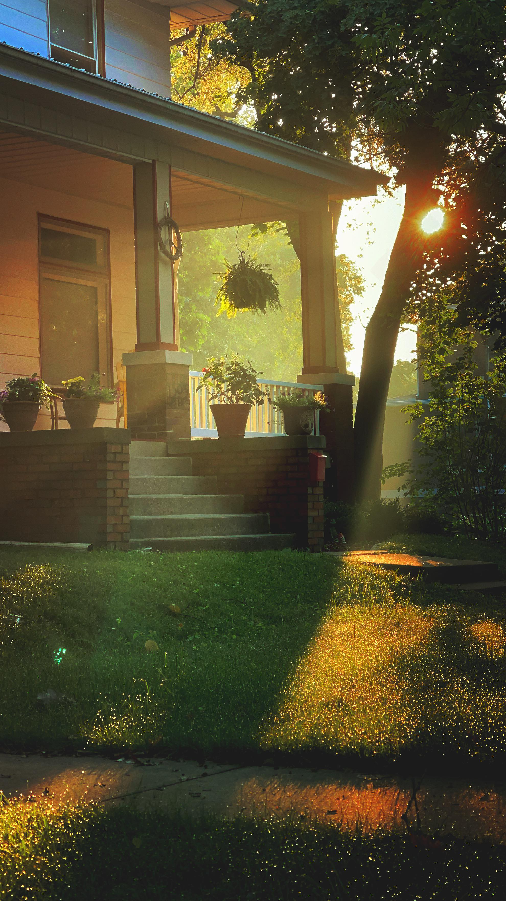

Life in the neighborhood
A View from the Uplands
One image can capture what makes this place worth caring for: distinctive homes, mature trees, shared gardens, and neighbors who show up.

See what we’re caring for
Small acts sustain a neighborhood
Contributions and volunteer time support practical neighborhood work: snow removal, boulevard gardening, community gatherings, and welcoming new neighbors.